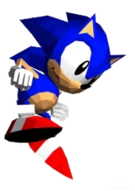
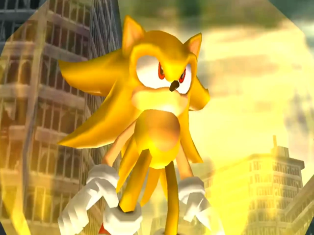
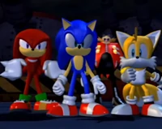
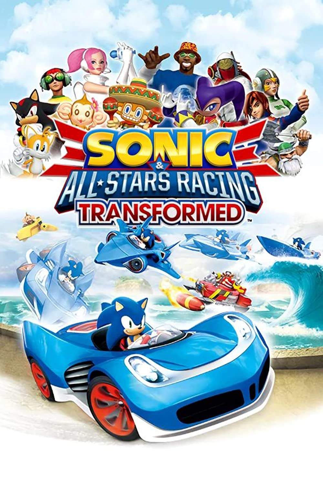

No se sabe mucho sobre la vida temprana de Sonic. Él nació en Christmas Island con su habilidad anormal de correr a súper velocidad, pero su amor por la aventura eventualmente lo llevo lejos de su casa.[3] Desde entonces, ha pasado su vida viajando por el mundo, impulsado por su espíritu inquieto, en busca de aventuras para satisfacer su sed de emociones.
En algún momento, Sonic conoció al Dr. Ivo Robotnik y se convirtieron en enemigos. Sonic posteriormente pelearía con Robotnik en un número incalculable de enfrentamientos mientras el científico intentaba una y otra vez conquistar el mundo, con Sonic frustrando los planes del doctor cada vez.
Sonic a través de los años
Haz un recorrido rápido a través de la historia de Sonic en este video que muestra algunos de sus juegos más importantes.
Los videojuegos de Sonic
Mira las múltiples aventuras de Sonic a través de los años
Primer juego de Sonic
Sonic The Hedgedog
Fecha de lanzamiento: 18 de octubre de 1985
Plataforma: Sega Genesis


Historia (traducción literal del folleto de instrucciones original)
En un intento de robar las seis Chaos Emeralds y aprovechar su poder, el malvado Dr. Ivo Robotnike ha atrapado a los habitantes animales de la Isla Sur dentro de robots agresivos y cápsulas de metal estacionarias. El jugador controla a Sonic, que pretende detener los planes de Robotnik liberando a sus amigos animales y recogiendo las esmeraldas él mismo. Si el jugador recolecta todas las Chaos Emeralds y completa el juego, se muestra una secuencia final. Si no se recolectan todas las esmeraldas, Robotnik se burla del jugador mientras hace malabares con cualquiera de las Chaos Emeralds que no haya recolectado el jugador.
¡Su historia! Detallamos su verdadera historia. ¡Conocela!
Estas son sus apariciones en los juegos.
Vida temprana
Sonic The Hedgedog (8 bits)
En Sonic the Hedgehog 2 para la Sega Master System y la Sega Game Gear, Sonic, después de haber salvado South Island, acababa de regresar de una aventura Y encontró una nota de Tails. En la nota, Tails dijo que él y los Animales de la isla habían sido secuestrados por el Dr. Robotnik y que ahora estaban en cautiverio en el Crystal Egg. Para llegar a Tails, Sonic tuvo que recoger las Chaos Emeralds. La nota también advirtió a Sonic de los seis Master Robots de Robotnik, que lo estaban esperando. Sin tiempo que perder, Sonic se dispuso a salvar Tails.
A lo largo de su aventura, Sonic consiguió las Chaos Emeralds según las instrucciones de Tails y derrotó a los Robot Masters, antes de enfrentarse a Robotnik en el Crystal Egg. Sin embargo, el doctor escapó a través de un teletransportador tras su derrota.
Sonic the Hedgedog 2
En Sonic the Hedgehog 2, Sonic estaba viajando por el mundo en el Tornado en busca de aventuras, cuando descubrió West Side Island. Decidiendo aterrizar allí, Sonic comenzó a explorar esta nueva región. Después de unos días, Sonic notó que alguien lo estaba siguiendo y vio que era un pequeño de zorro de dos colas llamado Miles Prower, mejor conocido como "Tails" por sus dos colas gemelas, que lo idolatraba.
Cuando Tails se escondió al ser descubierto, Sonic optó por ignorarlo e intentó huir, pero Tails siguió siguiéndolo e incluso mantuvo su velocidad. Impresionado por la tenacidad y la capacidad del zorro para mantenerse al día, Sonic decidió dejarlo ir a pesar de su desinterés por él. Más tarde, Sonic estaba durmiendo la siesta bajo el Tornado cuando fue despertado por explosiones y vio a los Badniks atacando West Side Island. Sonic sabía que el Dr. Robotnik estaba detrás de esto y fue a detener los planes del doctor.
SegaSonic The Hedgedog
En SegaSonic the Hedgehog, Sonic fue capturado por el Dr. Robotnik y encarcelado en Eggman Island donde iba a ser ejecutado junto con Mighty the Armadillo y Ray the Flying Squirrel. Trabajando en equipo con Mighty y Ray, Sonic escapó de su celda, sólo para ser llevado al otro lado de la isla con Mighty y Ray por un géiser activado por Robotnik. Trabajando juntos para escapar de la isla, el trío llegó a Eggman's Tower donde se enfrentaron a Robotnik. Robotnik, sin embargo, provocó la autodestrucción de la torre, con Sonic, Ray y Mighty logrando escapar justo a tiempo.
Sonic the Hedgehog CD
En Sonic the Hedgehog CD, Sonic viajaba a Never Lake para explorar Little Planet, un pequeño satélite que se acerca a la Tierra una vez al año. Sin embargo, cuando llegó Sonic, vio que todo el planeta se había transformado en un desierto mecánico y encadenado a una montaña cercana.
Después de evitar que algunos escombros de la montaña cayeran, Sonic notó que el rostro del Dr. Robotnik estaba tallado en la montaña donde estaba incrustada la cadena; de inmediato supo que su archienemigo estaba detrás de esto y viajo a Little Planet para liberarlo. Cuando llegó, Sonic se enteró de que podía deshacer lo que había hecho Robotnik viajando en el tiempo para cambiar el pasado y recolectando las Time Stones, gemas poderosas capaces de controlar el paso del tiempo.
Sonic Chaos
En Sonic Chaos, Sonic estaba en una aventura con Tails cuando escucharon un rumor que decía que el Dr. Robotnik estaba buscando las Chaos Emeralds en South Island.
Al regresar a casa, encontraron la isla en un caos ya que Robotnik había robado una de las Chaos Emeralds, creando así un desequilibrio que dispersó el resto de las Chaos Emeralds y estaba haciendo que la isla se hundiera en el océano. Como tal, Sonic y Tails se dispusieron a obtener las Chaos Emeralds antes de que fuera demasiado tarde.
Sonic the Hedgehog 3
Cuando Sonic y Tails llegaron al lugar, encontraron la legendaria isla flotante, Angel Island, excepto que el Death Egg se había estrellado en la isla e impedía que volviera a flotar. Al ver que el Death Egg estaba siendo reconstruido, Sonic y Tails se dispusieron a destruir el Death Egg para siempre.
Sonic utilizó las Chaos Emeralds para transformarse en Super Sonic y entro a la isla, pero cuando llegó, Sonic fue emboscado por Knuckles the Echidna, el guardián de Angel Island y de la Master Emerald. El equidna, a quien el Dr. Robotnik había engañado para que creyera que Sonic y Tails habían venido a robar la Master Emerald, robó las Chaos Emeralds y escapó con ellas para esconderlas.
Sonic & Knuckles
En Sonic & Knuckles, cuando Sonic y Tails aterrizaron en Mushroom Hill Zone después de escapar de la caída del Death Egg, vieron a la estación espacial sobrevivir a otro aterrizaje forzoso, esta vez en el volcán de la isla. No contento a menos que el Death Egg haya sido destruido por completo, Sonic partió con Tails una vez más para encontrar el Death Egg y destruirlo y también para descubrir el destino de Robotnik.
Cuando el dúo atravesó Mushroom Hill, vieron a Knuckles pasar por una puerta oculta. Después de asegurarse de que Knuckles se hubiera ido, Sonic abrió la puerta oculta y miró dentro con Tails, donde encontraron un Giant Ring. Emocionado, Sonic lo tocó, lo que lo llevó a él y Tails a una especie de santuario en Hidden Palace Zone, donde descansaba la Master Emerald. Llenos de preguntas, Sonic y Tails regresaron a Mushroom Hill Zone para comenzar la siguiente fase de su aventura.
Sonic the Hedgehog Triple Trouble
En Sonic the Hedgehog Triple Trouble, Sonic y Tails se dieron cuenta de que el Dr. Robotnik había perdido las Chaos Emeralds luego de una prueba de armas y entró en acción para encontrarlas. Sin embargo, mientras recolectaban información, Knuckles, quien había sido engañado por Robotnik para buscar a las Chaos Emeralds por razones equivocadas, de repente apareció y les dio una advertencia antes de irse. A pesar de la advertencia, Sonic permaneció inquebrantable.
A lo largo de su aventura, Sonic consiguió todas menos uno de las Chaos Emeralds mientras peleaba con Knuckles y Fang the Sniper, este último que quería las Emeralds con fines de lucro. Al llegar a la base del Dr. Robotnik, Sonic y Tails derrotaron a Metal Sonic, Fang y finalmente a Robotnik, mientras recuperaban la última Chaos Emerald del doctor. Después de eso, Sonic y Tails liberaron a Knuckles de la cárcel e hicieron las pases una vez más.
Sonic R
En Sonic R, Sonic estaba en una aventura con Tails cuando vieron un anuncio del World Grand Prix, una competencia de carreras para determinar a la persona más rápida del mundo. A pesar de la insistencia de Tails, a Sonic no le interesaba participar, pero cuando vio el nombre del Dr. Robotnik en la lista de participantes, cambió de opinión y salió corriendo para registrarse.
En la competencia, Sonic tuvo que enfrentarse a muchos de sus amigos, nuevos y viejos enemigos, y también a Robotnik, que planeaba usar a Sonic para localizar las Chaos Emeralds que estaban en las pistas de carreras. Al final, Sonic mantuvo su título como el más rápido del mundo y consiguió las Chaos Emeralds antes que Robotnik.
Sonic Labyrinth
En Sonic Labyrinth, algunos días después de que Tails se fue en una aventura en solitario, Sonic se despertó de una siesta en South Island, pero cuando se puso los zapatos, notó que sus pies se sentían extremadamente pesados. Al examinarlo, notó el logo del Dr. Robotnik en sus zapatos, los cuales no se podía se sacar. Maldiciendo su descuido, Sonic notó que Robotnik había cambiado los Power Sneakers de Sonic por las Slow-Down Boots, que deshabilito la velocidad y agilidad de Sonic.
Lo único que podía anular el efecto de los zapatos eran las Chaos Emeralds, que Robotnik ya había escondido en su nuevo súper laberinto en South Island. Incapaz de perseguir al doctor, Robotnik comenzó a apoderarse de la isla. Sin embargo, mientras su velocidad se había ido, Sonic se dio cuenta de que todavía podía usar su Spin Dash y decidido ir a través del laberinto para recuperar tanto su velocidad como las Chaos Emeralds.

Sonic The Fighters
En Sonic the Fighters, Sonic se enteró de que el Dr. Robotnik había construido el Death Egg II y estaba desplegando ejércitos de robots desde allí, que estaban destruyendo todo. Afortunadamente, Tails había construido el Lunar Fox, que podía volar directamente al nuevo Death Egg y destruirlo. Sin embargo, era de un solo asiento y necesitaba todas las Chaos Emeralds para despegar.
Sonic y Tails, por lo tanto, se pusieron en marcha para reunir las Chaos Emeralds de sus amigos (y enemigos), que las protegían. Sin embargo, en su primera parada, Sonic tuvo una discusión con Knuckles (uno de los guardianes de una de las Chaos Emeralds) sobre quién debería usar el Lunar Fox, con Knuckles argumentando que solo los más fuertes deberían ir. Creyendo que estaba más que calificado, Sonic aceptó el desafío de Knuckles, pero antes de que el erizo y el equidna pudieran pelear, Tails se interpuso entre ellos y los convenció de pelear de manera justa en un ring con el resto de sus amigos, y el que pueda ganar contra todos los concursantes, conseguirá montar el Lunar Fox.
Sonic 3D Blast
En Sonic 3D Blast, Sonic viajó con Tails y Knuckles a Flicky Island. Habiendo escuchado leyendas sobre los Flickies de la isla como la clave para encontrar las Chaos Emeralds, el trío viajó hasta allí para encontrar estas aves.
Sin embargo, una vez que llegaron a la isla, encontraron que la isla estaba en caos y que el Dr. Robotnik estaba ocupándose de convertir a los Flickies en Badniks. Resultó que Robotnik había establecido una base en la isla y estaba atrapando a los Flickies para poder alimentar a sus robots y encontrar las Chaos Emeralds en la isla. Cuando Sonic dejó clara su presencia ante Robotnik, que partía en el Egg Mobile, Sonic decidió rescatar a la isla y sus habitantes. En poco tiempo, Sonic salvó a los Flickies en la isla y, con la ayuda de Tails y Knuckles, reunió todas las Chaos Emeralds antes de que el doctor pudiera hacerlo. Los Flickies luego ayudaron a Sonic a entrar en la guarida secreta del Dr. Robotnik, donde Sonic venció a Robotnik en una larga batalla. Escapando de la guarida a tiempo, Sonic conoció a los Flickies, quienes le agradecieron por su ayuda y la paz reinó en la isla una vez más.
Sonic Blast
En Sonic Blast, Sonic estaba durmiendo la siesta en South Island cuando fue despertado por una luz de una cercana Chaos Emerald que se rompió y se extendió por toda la isla. Robotnik luego apareció para revelar que planeaba disparar a Sonic con un rayo láser, pero en su lugar golpeó la Chaos Emerald. Aún satisfecho con el resultado, Robotnik planeaba usar los fragmentos para fortificar su Silver Castle Zone. Cuando Sonic estaba a punto de dirigirse para encontrar los fragmentos, Knuckles apareció y se unió a él en su búsqueda. Finalmente, Sonic y Knuckles consiguieron los fragmentos primero y destruyeron la fortaleza de Robotnik.

Sonic Adventure
En Sonic Adventure, y su remake Sonic Adventure DX: Director's Cut, Sonic fue en contra de un antiguo monstruo llamado Chaos, que estaba bajo control del Dr. Ivo Robotnik (que oficialmente recibe el nombre de Dr. Eggman en la versión en Inglés, que pretende ser un insulto, pero luego lo toma como el suyo propio). Sonic y Tails se unieron una vez más para conseguir las Esmeraldas del Caos para evitar el caos de alcanzar su forma final y la destrucción de Station Square. Se encontraron muchos aliados en el camino a pesar de que eran muy lamentable a veces perder las esmeraldas. Sonic vio que Chaos había terminado con seis de las esmeraldas y que se encontraba en el Egg Carrier. Pensando que había terminado, que no estaban preparados cuando Chaos tiene una bodega de las siete Chaos Emeralds cuando estaban de regreso en la Angel Island y destruyeron la estación de la Plaza. Sonic con la ayuda de sus amigos obtuvo la última de las esmeraldas y aprovechando su energía positiva, Sonic derrota a Perfect Chaos como Super Sonic, convirtiendo a Chaos en una criatura más benevolente.
Sonic Shuffle
En Sonic Shuffle, Sonic junto con Tails, Knuckles y Amy, fueron repentinamente transportados a Maginaryworld. Después de aterrizar en el Templo de la Luz, el grupo comenzó cuestionando dónde estaban, mientras que de Sonic sólo lo calificó como un " extraño lugar ". Allí conocieron a un ser como de cuento. Sonic preguntó quién era ella y ella se presentó como Lumina Flowlight, la persona responsable que los llevó a Maginaryworld.
Después de presentarse a sí misma y a Sonic y sus amigos, explicó que fueron traídos aquí para ayudar a salvar la Precioustone, el objeto que sostenía Maginaryworld, que había sido destrozada por Void cuando intentaba robarla. Entonces Sus piezas se dispersaron por diferentes partes del Maginaryworld y gobernante y protector de la Precioustone, Lumina, desaparece también. Sonic escucha a Lumina y le explicó que él y los demás ayudaran lo necesario para recuperar las piezas del Precioustone, o la oscuridad de Void podría significar el fin de Maginaryworld. Con todo el mundo de acuerdo, Sonic voluntariamente accedió a ayudar a salvar a Lumina y Maginaryworld.
Sonic Adventure 2
En Sonic Adventure 2, y su remake Sonic Adventure 2: Battle, un erizo negro llamado Shadow the Hedgehog robó una Chaos Emerald, y la policía confundió con Sonic. Shadow fue puesto en libertad por el Dr. Eggman para ayudar en sus planes de dominación mundial. Ser querido por el Guardian Units of Nations (GUN) Sonic fue capturado y encerrado en Prision Island. Sonic fue más tarde rescatado por Tails y Amy donde se escapó de la isla y comenzaron a encontrar una manera de base de Eggman para llegar a la Space Colony ARK. Sonic tuvo que rescatar a Tails y Amy de Eggman, pero se disparó en la atmósfera y se salvó por un Chaos Control. Sonic se encontró de nuevo en el arca en el exterior tener que salvar a todos mediante la desactivación del planeta-la destrucción de Eclipse Cannon.
Sonic Advance
En Sonic Advance, Sonic se unió a Tails, Knuckles y Amy para detener al Dr. Eggman antes de que obtenga las siete Chaos Emeralds. Al final, Sonic y sus amigos lograron vencer a Eggman y consiguieron las Chaos Emeralds primero. El grupo finalmente siguió Eggman en el espacio, en el que se enfrentaron a él en la X Zone. Después de que derrotaron el Egg X, Sonic persiguió a Eggman cuando el científico trató de escapar, sólo para parar en el borde de la estación cuando Eggman huyó a la Luna. No con la intención de dejar escapar a Eggman, Sonic utiliza las Chaos Emeralds para transformarse en Super Sonic y lo siguió. En la superficie de la Luna, Super Sonic se enfrentó Eggman y su Super EggRobo y lo derrotó. Después de la pelea, Sonic aparentemente desapareció, pero luego volvió a aparecer a los pocos días (aún en su estado súper) mientras volaba por el cielo, donde se reunió con Tails en el Tornado.

Sonic Heroes
Algún tiempo después, Sonic Team y los otros fueron testigos del regreso de Metal Sonic, quien logró una nueva forma, Neo Metal Sonic, y había puesto en escena las aventuras del equipo y hacerse pasar por Eggman para que pudiera seguir y copiar sus datos en un plan para conquistar el mundo. Al ver que los equipos tenían todas las Chaos Emeralds, el verdadero Dr. Eggman se le ocurrió el plan de usarlas contra Metal Sonic. Aunque sus posibilidades de ganar eran escasas, Sonic se ofreció a ir en contra Metal Sonic solo, pero se unió a Knuckles y Tails, mientras que los otros equipos se ofrecieron a comprar algo de tiempo. Aceptando la ayuda de todos, Sonic y su equipo usan las Chaos Emeralds, mientras que los demás luchan contra Metal Madness.
Cuando Metal Madness transforma en Metal Overlord, Sonic transforma en Super Sonic, mientras que le da un Super Shield a Tails y Knuckles. Posteriormente, el equipo se fue y derrotó a Metal Overlord. De vuelta en la nave, Sonic se quedó triunfante sobre Metal Sonic cuando vio que Amy se le acercó.
Shadow the Hedgedog
En Shadow the Hedgehog, Sonic ha trabajado con la mayoría de sus amigos y las fuerzas de GUN para repeler la invasión de la Tierra de los Black Arms. Él apareció a menudo durante las misiones del héroe de Shadow donde ayudó en su lucha contra los Black Arms y su líder, Black Doom.
Sonic Rush
En Sonic Rush, Sonic se encontró con el Dr. Eggman, quien afirmó que él no tardaría en tener el Poder Absoluto. Después de derrotar a Eggman, Sonic vio que se le cayó la Sol Emerald, pero de repente se encontró con Blaze the Cat, quien tomó la esmeralda y se fue. Sonic más tarde se reunió con Tails y explicó acerca de lo que acababa de presenciar. Ansioso por este nuevo reto, Sonic salió con Tails para detener a Eggman.

Sonic Unleashed
En Sonic Unleashed, después de una serie incalculable de aventuras para Sonic, llegó al enorme flota del Dr. Eggman en el espacio y comenzó voladura a través de sus fuerzas, antes de que él se enfrentó a Eggman en un poderoso mecanismo. Como Sonic fue forzado a la defensiva, que fue capturado por Eggman, pero Sonic se vengó al convertirse en Super Sonic, destruyendo los robots de Eggman y su flota mientras perseguía a Eggman que intentaba escapar.
Super Sonic persiguió a Eggman hasta una estación espacial, que él creía que había acorralado a Eggman. Sonic pronto se dio cuenta que había sido atraído a una trampa y él terminó siendo atrapado en una maquina donde Super Sonic tenía las Esmeraldas del Caos eliminado dolorosamente de él, volviendo a la normalidad. Con el poder de las Esmeraldas, Eggman disparó el cañón en el planeta, lo rompió, y despertó a la antigua criatura llamada Dark Gaia, con el fin de aprovechar su poder. En el proceso, una parte de la energía de Dark Gaia infecto a Sonic y lo convirtió en un monstruo.
Apariciones en otros juegos Sonic y sus apariciones adicionales.
Sega Super Stars Tennis
En Sega Superstars Tennis, Sonic es un personaje jugable. Él jugó al tenis con otros personajes de SEGA.
Sonic & Sega All Star Racing
En Sonic & SEGA All-Stars Racing, Sonic es uno de los personajes jugables en el juego. Para las carreras en este juego, se utiliza el vehículo Speed Star.

Sonic & Sega All Star Racing Transformed
Sonic conduce su Speed Star de nuevo, ahora ataviado a convertir en un avión y un barco.
Mario & Sonic at the Olympic Games
En Mario & Sonic en los Juegos Olímpicos, Sonic es un personaje jugable, donde conoció a Mario en los Juegos Olímpicos. Equipo de Tails, Knuckles, Amy, Blaze, Shadow, Vector, y el Doctor Eggman de Sonic compitió contra el equipo de Mario de Nintendo de Luigi, Yoshi, Peach, Daisy, Wario, Waluigi y Bowser.
Mario & Sonic at the Olympic Winter Games
En Mario & Sonic en los Juegos Olímpicos de Invierno, Sonic es un personaje jugable en el que compitió con Mario en los Juegos Olímpicos de Invierno en Vancouver, unidos por nuevos compañeros Silver y Metal Sonic.
Mario & Sonic at the London 2012 Olympic Games
En Mario & Sonic en los Juegos Olímpicos de Londres 2012, Sonic es un personaje jugable en su tercera aparición olímpica con Mario en Londres.
Mario & Sonic at the Sochi 2014 Olympic Winter Games
Sonic hizo su cuarta aparición olímpica en Mario & Sonic en los Juegos Olímpicos de Invierno de Sochi 2014.
Super Smash Bros. Brawl
En Super Smash Bros. Brawl, Sonic es de los personajes jugables en el juego. Él se puede desbloquear en el juego al hacer cualquiera de estas cuatro tareas:
- Jugar 300 reyertas, y luego derrotar a Sonic.
- Completar el modo clásico con 10 personajes, luego derrota a Sonic.
- Lucha por 10 horas o más (acumulativos entre varios jugadores) en reyertas, y luego derrotar a Sonic.
- Sonic a de unirse a la fiesta del jugador en el emisario subespacial.
Super Smash Bros for Nintendo 3DS/Wii Us
Sonic fue confirmado para Super Smash Bros. for Nintendo 3DS/Wii U el 1 de octubre de 2013, por lo que es su segunda aparición en la serie Super Smash Bros. de Nintendo. Él es el primer veterano Third Party de la serie.